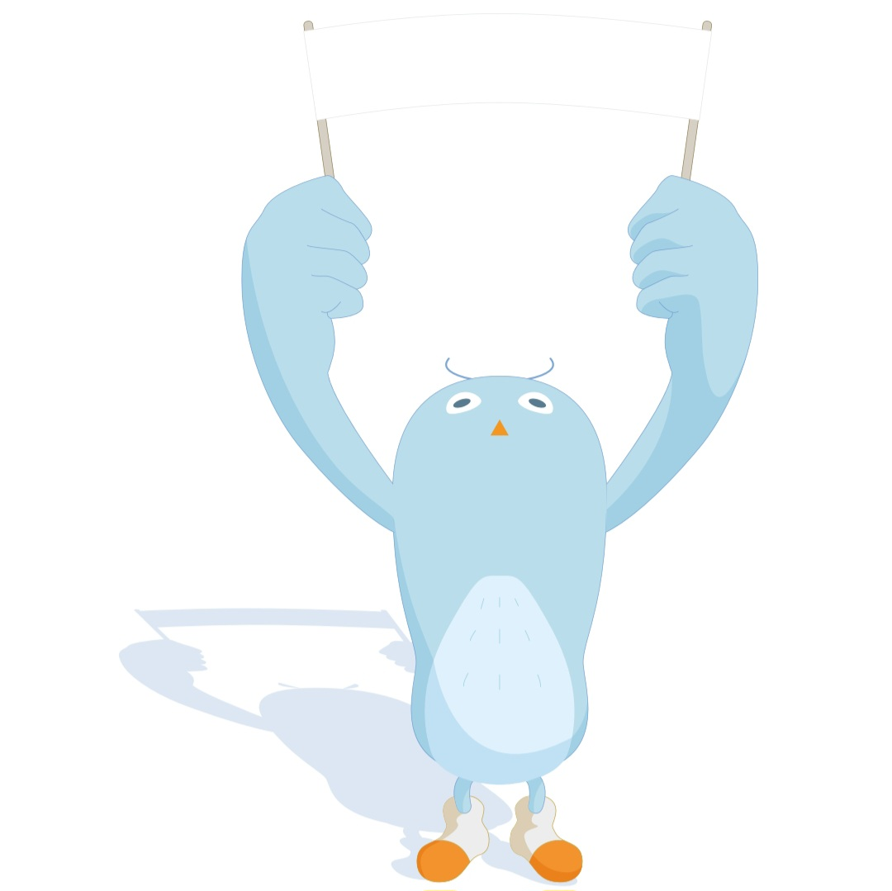

HAPPY BUDDY DAY !
00
:
00
pm
여행 성향 테스트 결과
모험을 담는 사진가
즉흥적인 사진 여행가

당신은 여행 중 즉흥적인 순간을 즐기며, 그 순간을 사진으로 남기고 싶어하는 여행자입니다. 계획보다는 현장에서 느끼는 감정과 순간을 중요하게 생각하며, 이를 기록하려 합니다. 외부 활동을 선호하며, 여행지에서의 다양한 경험을 자신만의 방식으로 자유롭게 담아내는 스타일입니다.
Tips
자연 속에서 시간을 보내거나 여유로운 도시를 방문하면 더 나은 여행을 즐길 수 있습니다.
즉흥적인 순간을 즐기고 기록하면서도 휴식을 취하는 시간을 충분히 가지세요.
Best Spots
프랑스 파리: 멋진 건축물과 분위기를 담을 수 있습니다.
이탈리아 로마: 역사적인 순간을 만나볼 수 있는 여행지입니다.
네덜란드 암스테르담: 아름다운 풍경을 즉흥적으로 촬영하기 좋은 곳입니다.